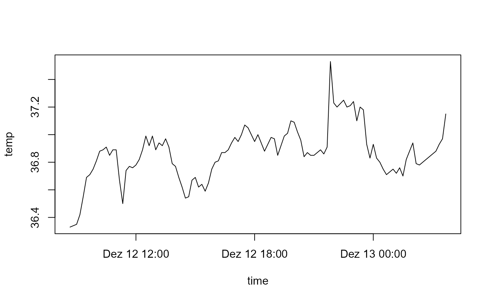
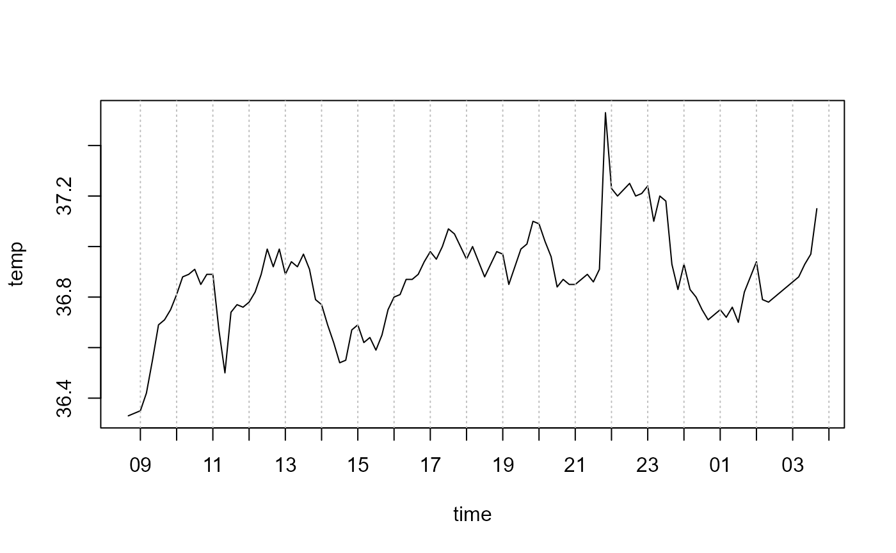

Compute pretty tickmark locations, the same way as R does internally. By default, gives the at values which axis.POSIXct(side, x) would use.
Arguments
- side
See axis.
- x, at
A date-time or date object.
- format
See strptime.
- labels
Either a logical value specifying whether annotations are to be made at the tickmarks, or a vector of character strings to be placed at the tickpoints.
- ...
Further arguments to be passed from or to other methods.
See also
axTicks, axis.POSIXct
Other plot.utils:
splineCI
Examples
with(beaver1, {
time <- strptime(paste(1990, day, time %/% 100, time %% 100),
"%Y %j %H %M")
plot(time, temp, type = "l") # axis at 4-hour intervals.
# now label every hour on the time axis
plot(time, temp, type = "l", xaxt = "n")
r <- as.POSIXct(round(range(time), "hours"))
axis.POSIXct(1, at = seq(r[1], r[2], by = "hour"), format = "%H")
# place the grid
abline(v=axTicks.POSIXct(1, at = seq(r[1], r[2], by = "hour"), format = "%H"),
col="grey", lty="dotted")
})

